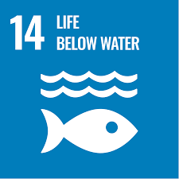

Our Commitment to Sustainability
Aligned with the UN SDGs, our system supports:


Unleashing the Depths with Cutting-Edge Technology
Aligned with the UN SDGs, our system supports:
BALAMURALI A
SIT23CS190
sit23cs190@sairamtap.edu.in
DARSHAN K R
SIT23CS193
sit23cs193@sairamtap.edu.in
HARIHARAN RAJA R
SIT23CS215
sit23cs215@sairamtap.edu.in
ELACHEZIYAN S
SITL24CS08
sitl24cs08@sairamtap.edu.in
Email: info@underwaterdetection.com
Phone: +1-800-OCEAN-TECH
Address: SRI SAIRAM INSTITUTE OF TECHNOLOGY